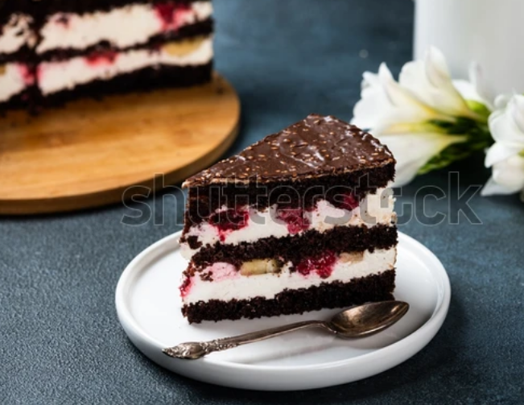

Black Forest Recipe
For all the chocolate lovers and cake lovers, Black Forest cake is the great deal.
I'm pretty sure you are gonna be proud of you for having made this great achievement of preparing your ideal dessert. So let's get started!

Looks enticing, doesn't it? Worry no more cause I've got you!
Let us get started!
Description
- Prep time:50 mins
- Cook time:35 mins
- Additional time:1hr 30mins
- Total time:2 hrs 55 mins
- Servings:12
- Yield:1 9-inch cake
Ingredients
Cake
- 2 1/8 cups of all purpose flour
- 2 cups white sugar
- 3/4 cup unsweetened coca powder
- 1 1/2 teaspoons baking powder
- 3/4 teaspoon salt
- 3 eggs
- 1 cup milk
- 1/2 cup vegetable oil
- 1 tablespoon vanilla extract
Topping
- 2 cans pitted sour cherries
- 1 cup white sugar
- 1/4 cup cornstarch
- 1 teaspoon vanilla extract
Frosting
- 3 cups heavy whipping cream
- 1/3 cup confectioners' sugar
Directions
- Preheat the oven to 350 degrees F(175 degrees C)
- Grease and flour two 9-inch round cake pans; line bottom with parchment paper. Place a medium bowl in refrigerator to chill.
- Into a large bowl, whisk flour, sugar, cocoa, baking powder, bakiing soda and salt together.
- Add eggs, milk, oil and vanilla; beat until combined.
- Pour cake batter into the prepared pans
- Bake in preheated oven for 35 minutes. Insert toothpick in centers and ensure it comes out clean.
- Cool layers in pans on wire racks for 10 mins. Run a pairing knife around the edges to loosen and invert carefullyonto racks to cool completely, 1-2 hours.
- Drain cherries for topping to obtain 1/2 cup juice.
- Combine reserved juice, cherries, sugar and cornstarch in a saucepan.Cook, stirring constantly over low heat til thickened. Stir in vanilla. Let it cool for 30mins. Transfer to refrigerator to cool completely before assembling the cake.
- Mix whipping cream and confectioners' for frosting in the chilled medium bowl. Beat with an ellectric mixer at high speed til stiff peak forms.
- Using a long serrated knife, split each cake layer in half horizontally.
- Tear onelayer into crumbs; set aside. Gently brush off loose crumbs off top and sides of remaining layers using a pastry brush/your hands. Reserve 1 1/2 cups frosting for piping decorations on cake set aside.
- To assemble,place one cake layer on a cake plate. Spread with 1 cup frosting; top with 3/4 cup cherry topping. Top with second cake layer; repeat layers of frosting and chery topping. Top with third cake layer and frost sides of cake.
- Pat reserved cake crumbs onto side s of cake. Spoon reserved 1 1/2 cups frosting into a pastrybag fitted with a star decoration tip. Pipe around bottom and top edges of cake. Spoon remaining cherry topping on top of cake.
- Store covered in the refrigerator until ready to serve.
Enjoy with some milk or fresh juice!